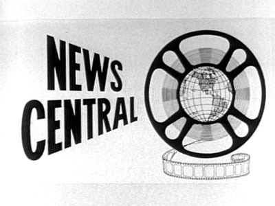
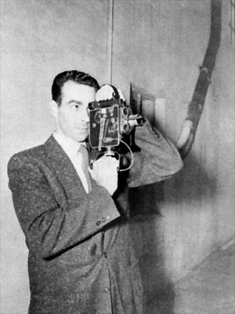
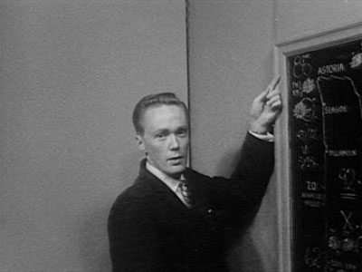
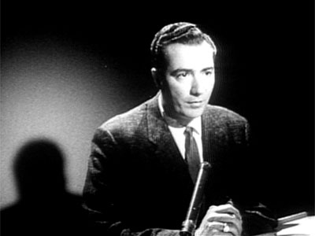
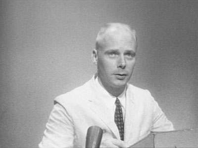
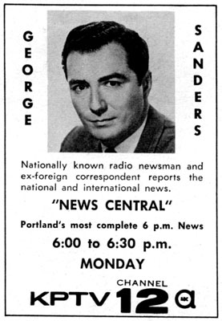
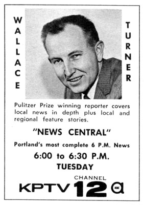

|
L O C A L P R O G R A M S |
News Central
January
1956 - 1964?
| One of KPTV's earliest efforts in
news, News Central presented filmed coverage of local and national news.
News Central is one of the great new local shows recently added to the KPTV schedule. Getting away from the old-hat tradition of newspaper styling in TV news programs, KPTV has given a television flair to "News Central," weekdays at 6:00-6:30 p.m. Inasmuch as it is television news, the name, "News Central" was chosen and script includes terms and expressions used in television rather than attempting to imitate or identify the program with any news paper style or locale. The show revolves around Ivan Smith, KPTV newscaster, with Tom Lawson McCall's editorial feature concerned with local viewers' interest in Portland activities. Hal Childs, sportscaster with the sports, emphasizing televised sports. Special emphasis is also placed on the intramural regional sports up and down the Willamette Valley, in Washington, St. Helens, etc. (High school teams and State colleges.) In the weather department, [Gene] Brendler gives complete weather analysis pertaining to weather conditions of greatest interest to Northwest residents. The report is informative and complete without bringing in obscurities or the involved technical language which can easily enter into such a report. Brendler's informal, relaxed person-to-person type of presentation as moderator sets the easy pace in knitting the show together as a neighborly "visit in your living room" method of conveying the news to the viewing public. This informality is one of the greatest boons of the television media and much thought and planning on the part of KPTV programming department have gone into incorporating it into the news show. The show is a participating one with Alka-Seltzer regularly sponsoring the Ivan Smith "Alka-Seltzer Newspaper of the Air" segment. Ideal for spot participation due to the time of day and camera panning back to Brendler between each news segment, sponsors are snapping up spots on this new good seller. Article in TV Radio Entertainment Guide, January 29, 1956 |

First
anchor
of
News
Central,
Ivan
Smith,
who
made
a
name
for
himself
at
KPTV,
before
making
a
career
at
KGW
(8).

Weatherman John Lewis, from an early 1960s
"News Central"
broadcast.

Reporter George Sanders anchors "News Central,"
circa 1962.

Jimmy Jones took over sports duties,
beginning in 1960.


Two
TV
Guides
ads
from
August
7,
1960.
| News Central BROADCAST HISTORY |
| -JAN
1956- : MON-FRI 6:00PM-6:30PM DEC 1960 - : MON-FRI 6:30PM-7:00PM FEB 1962: MON-FRI 6:30PM-6:45PM |
This page last updated on August 17, 2025
|
Yesterday's KPTV Website design and content ©2003-2025 by Ron Dunevant, LLC unless otherwise noted. |